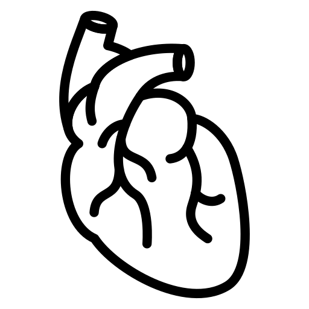

Здравей! Аз съм твоят бъдещ психолог - Ямур Ревайдин.
Моята мисия е психологията. По пътя си към това да стана психолог преминах през много изпитания и трудности, както всеки човек. Именно те ме научиха, че истинската промяна започва там, където сме готови да се срещнем със себе си. Тук съм, за да те чуя. Да ти предложа безопасно пространство, приемане и разбиране. Заедно можем да отворим онези тъмни стаички в душата ти - не за да те плашат, а за да ти олекне. Пътят не е лесен и не е линеен, но е твоят. Ако избереш мен, ще бъда твоят спътник по него. Направи първата стъпка.
Запази час за консултацияИзбери една от картите по-долу.
1

Carpe diem
Улови деня (живей в настоящето)
2

Homo sum, humani nihil a me alienum puto
Човек съм - нищо човешко не ми е чуждо
3
Amor fati
Любов към съдбата или Обичай съдбата (си)